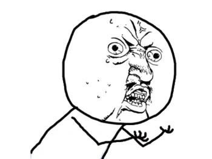
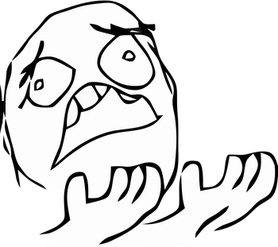
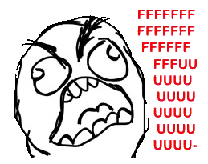

Odin List Projects
Unordered Food List
Using dingbats, yin/yang
- Pizza
- Peanut Butter
- Cereal
- Shrimp Parmesan
- Chocolate ice cream
Ordered List of ToDo's for today
This one uses content: counter: li
- Change loaches water
- Empty Dishwasher
- Acclimate new Candle Tail guppies
- Ice Cream for Dinner
- Medicate Candle Tails
Rage Faces in Fave Order
- LOL Guy
- YUNO Guy 
- Whyyyy 
- Ffff.. 
Favorite Movies
- The Empire Strikes Back
- RoboCop
- Caddyshack
- To Catch a Thief
- The Pink Panther
Description List
- Corydoras Catfish
- Corydoras is a genus of freshwater catfish in the family Callichthyidae and subfamily Corydoradinae.
- Pangio oblonga
- Most commonly found in shallow, slow-moving sections of forest streams or other calm habitats such as swamps,
oxbows,
and backwaters.